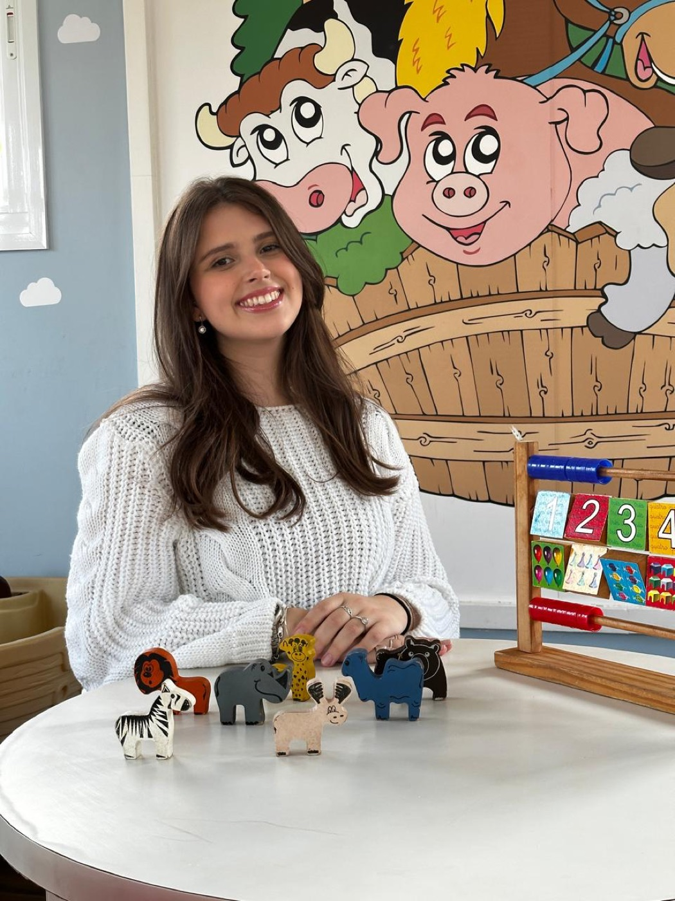
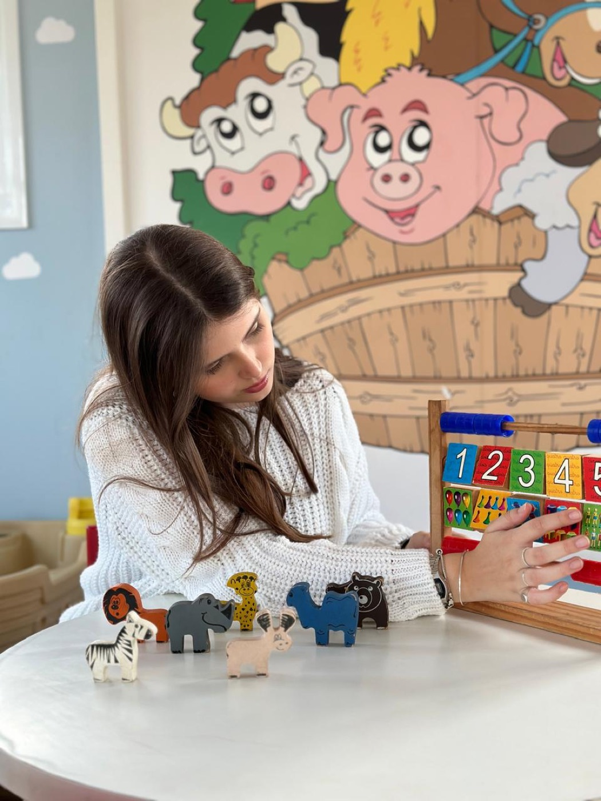
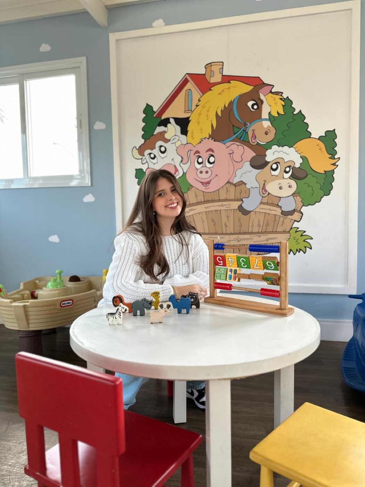

Educação Infantil
É onde mais atuei: acolhimento, rotina, interações e brincadeiras, com propostas pensadas para a idade e o tempo de cada criança.
♥ Professora · Educação Infantil e Anos Iniciais ♥
Sou Julia Brasilio, concluindo Pedagogia na PUC-Campinas, com quase quatro anos de vivência na Educação Infantil e nos anos iniciais do Ensino Fundamental. Acredito numa escola que acolhe, escuta e faz de cada criança a protagonista do que aprende.


♥ Sobre mim ♥
Sou Julia Brasilio, estou no último semestre de Pedagogia na PUC-Campinas e vivo o dia a dia da escola desde 2023. Comecei como estagiária no Colégio Anglo Jaguariúna, com turmas de 1º e 2º ano, e desde setembro de 2023 faço parte da equipe do Colégio Integrado. Lá, fui regente de uma turma de Infantil 4 no período integral, de 2024 a abril de 2025, faço substituições em diferentes turmas e hoje atuo no 2º ano.
Na universidade, a literatura infantil virou o meu tema: é sobre ela o meu TCC, que investiga como o professor media a leitura e ajuda a criança a ler o mundo. Agora, busco uma turma para chamar de minha, como professora regente.
Sou Julia Brasilio e estou no último semestre de Pedagogia na Pontifícia Universidade Católica de Campinas (PUC-Campinas). Desde 2023, a escola é o meu lugar de todos os dias.
Comecei como estagiária no Colégio Anglo Jaguariúna, entre fevereiro e setembro de 2023, com turmas de 1º e 2º ano do Ensino Fundamental. Desde setembro de 2023, faço parte da equipe do Colégio Integrado como auxiliar de classe, hoje no 2º ano: participo do cotidiano escolar, do acompanhamento dos estudantes e do desenvolvimento das atividades pedagógicas.
Entre 2024 e abril de 2025, fui responsável pela regência de uma turma de Infantil 4 no período integral. Ali vivi por inteiro o trabalho de uma professora: planejar e conduzir propostas, organizar a rotina e acompanhar de perto o desenvolvimento de cada criança. As substituições que faço em diferentes turmas seguem ampliando esse olhar e me lembram que cada grupo pede um jeito próprio de ensinar.
A graduação me levou a lugares diferentes. Estudei a educação popular e as práticas educativas do MST, com visitas a assentamentos e a criação de um jogo pedagógico para os anos iniciais. No Centro Vitalitá, trabalhei com a inclusão digital de pessoas idosas. Hoje, em parceria com o Museu Universitário da PUC-Campinas, desenvolvo o projeto Memórias do brincar: patrimônio das infâncias, que me leva a pensar nas relações entre infância, memória, cultura e educação. Ao longo do curso, também criei jogos, materiais manipuláveis e propostas lúdicas para diferentes faixas etárias. A literatura infantil é a minha paixão e o tema do meu TCC, que investiga o papel do professor na mediação da leitura e no processo de leitura do mundo pela criança. Também tenho formação complementar em inglês, com certificação de nível intermediário.
Acredito numa educação acolhedora, significativa e comprometida com o desenvolvimento integral: que valoriza as singularidades, incentiva a autonomia e reconhece a criança como protagonista da própria aprendizagem. É isso que quero levar para a minha turma como professora regente na Educação Infantil ou nos anos iniciais do Ensino Fundamental.
♥ No que eu acredito ♥
Ela pergunta, investiga e cria. Eu preparo o caminho, faço boas perguntas e incentivo a autonomia.
Valorizar as singularidades é planejar para crianças reais, com ritmos e jeitos diferentes de aprender.
É brincando que a criança experimenta, se expressa e aprende com sentido.
Com uma boa mediação, cada livro vira um jeito novo de ler o mundo.
♥ Trajetória ♥
Da sala de aula à universidade, cada experiência ampliou o meu olhar sobre as infâncias.
fev – set/2023
Estágio
Turmas de 1º e 2º ano do Ensino Fundamental e contato com diferentes etapas da escolarização.
set/2023 – hoje
Auxiliar de classe
Cotidiano escolar, acompanhamento dos estudantes e desenvolvimento de atividades pedagógicas.
2024 – abr/2025
Regente do Infantil 4 (integral)
Planejamento e condução das propostas, organização da rotina e acompanhamento do desenvolvimento das crianças.
hoje
2º ano e substituições
Atuação no 2º ano e regência de diferentes turmas nas substituições, com um repertório que cresce a cada grupo.
até dez/2026
Licenciatura em Pedagogia
2023
Projeto Integrador
Inclusão digital de pessoas idosas no Centro Vitalitá.
2023 – 2026
Produções acadêmicas
Jogos, materiais manipuláveis e propostas lúdicas.
2026
Projeto Integrador
Educação no campo e um jogo pedagógico para os anos iniciais.
2026
Projeto Integrador · em desenvolvimento
Com o Museu Universitário da PUC-Campinas.
2026
Pesquisa
O papel do professor na mediação da literatura infantil no processo de leitura do mundo pela criança.
Por onde passei
♥ Habilidades ♥

É onde mais atuei: acolhimento, rotina, interações e brincadeiras, com propostas pensadas para a idade e o tempo de cada criança.
Organizo e elaboro propostas com objetivos claros, alinhadas à BNCC e à realidade da turma, sem perder a flexibilidade para acolher o inesperado.
Na regência do Infantil 4 e nas substituições, aprendi a organizar o grupo, construir combinados e conduzir a rotina com segurança e afeto.
Acompanho e registro o desenvolvimento e a aprendizagem das crianças, com um olhar atento às singularidades de cada uma.
Base da minha formação e dos meus projetos: ler e escrever com sentido, com a literatura infantil como ponte.
♥ Projetos ♥
Um pouco do que planejei, conduzi e aprendi na escola e na universidade. Clique em um projeto para ver o desafio, o que eu fiz e o que aconteceu.
Quer ver de perto como eu planejo?
♥ Formação ♥
PUC-Campinas · conclusão em dezembro de 2026
O Papel do Professor na Mediação da Literatura Infantil no Processo de Leitura do Mundo pela Criança · 2026
Educação e Emancipação (2026) · Memórias do Brincar, com o Museu Universitário (2026, em desenvolvimento) · Memória dos idosos, no Centro Vitalitá (2023)
Nível intermediário, com certificado
♥ Depoimentos ♥
♥ Vamos conversar? ♥
Estou pronta para assumir uma turma como professora regente na Educação Infantil ou nos anos iniciais do Ensino Fundamental a partir de janeiro de 2027, em Jaguariúna, Holambra e região. Se a sua escola acredita numa educação que acolhe, planeja com intenção e coloca a criança no centro, vou adorar conhecer a sua proposta pedagógica e contar como posso contribuir com ela.
Prefere falar direto?